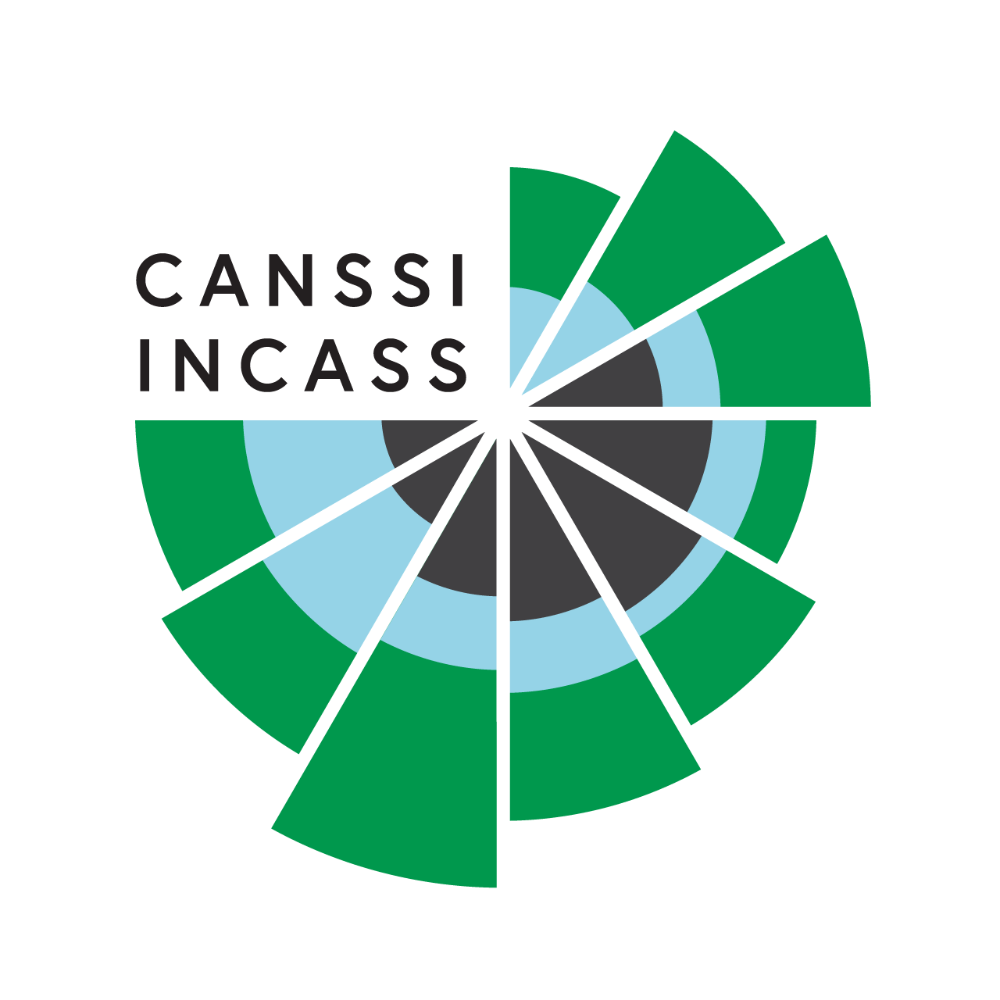
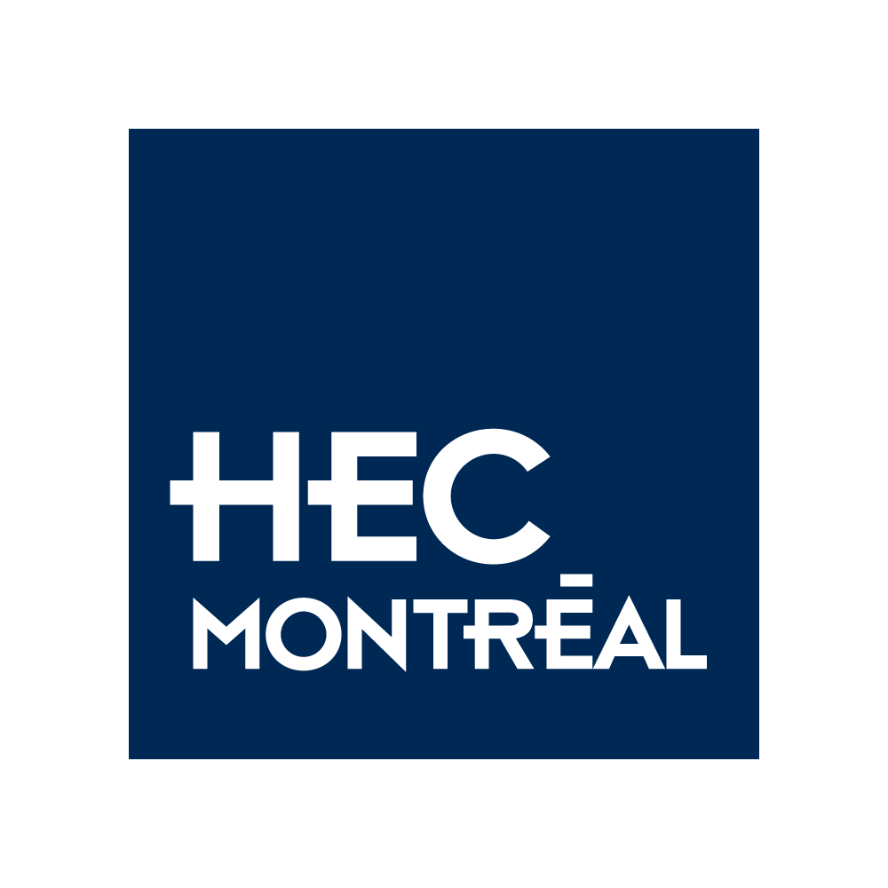
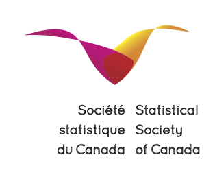

CanCOTS 2025
Le premier congrès canadien sur l’enseignement de la statistique (CanCOTS 2025) se tiendra à HEC Montréal du mercredi 11 juin au jeudi 12 juin 2025.
Un atelier dédié aux enseignant(e) du collégial sur l’inférence basée sur la simulation se déroulera le mardi 10 juin.
Emplacement
Le congrès se déroulera au 5e étage de l’édifice Hélène Desmarais.
501, rue De La Gauchetière Ouest Montréal, QC H2Z 1Z5
Le campus du centre-ville est facilement accessible par transport en commun, soit avec le métro (station Square-Victoria-OACI, ligne orange), ou depuis la station de REM de la Gare Centrale.
Les discussion se tiendront dans la salle de cours MNP (A.536) (plan en pdf) et dans les salles d’études adjacentes (Denis-Girouard A.545 et Laurent-Ferreira A.547).
Comité scientifique
- Léo Belzile (HEC Montréal, organisateur local)
- Alison Gibbs (University of Toronto)
- Wesley Burr (Trent University)
- Bruce Dunham (UBC)
Partenaires
Nous sommes reconnaissants du soutien financier
- de l’Institut canadien des sciences statistiques (INCASS) par le biais du CRSNG,
- du groupe d’éducation en statistique de la Société statistique du Canada
- du Centre de Recherche Mathématiques
- de HEC Montréal




Historique
Les « Congrès sur l’enseignement des statistiques » ont une longue et riche histoire, depuis les premières conférences internationales de ce type, avec la première édition de l’ICOTS en 1982 (Sheffield, Royaume-Uni) et en 1986 (Victoria, Canada). Au total, onze ICOTS ont été organisées, tous les quatre ans depuis 1982, ainsi qu’un certain nombre de versions régionales, notamment
Format
Le format du colloque CanCOTS n’est pas conventionnel. Après une première table ronde visant à présenter aux participants la littérature la plus récente, les participants se diviseront en petits groupes, chacun travaillant sur un domaine d’intérêt prioritaire. Ces derniers seront présélectionnés avant la réunion, de sorte que les participants puissent arriver en ayant déjà une idée de ce à quoi ils pourraient vouloir contribuer, et qu’ils puissent apporter des ressources potentielles à partager avec le groupe.
Chaque groupe définira et, à la fin de la réunion, repartira avec des résultats concrets, qu’ils soient en cours de réalisation ou achevés. En fonction du domaine prioritaire, ces résultats pourraient prendre la forme d’articles de conférence ou de formats moins traditionnels (par exemple, des banques d’exercices, des lignes directrices pour les programmes d’études, des exemples d’activités d’apprentissage et d’éléments d’évaluations, etc.)
Chaque petit groupe de travail sera dirigé par un(e) chef(fe) d’équipe qui guidera les discussions et encouragera les progrès vers les résultats convenus. Cette personne sera également chargée de présenter brièvement le domaine prioritaire afin de lancer la première journée et d’animer les sessions de travail qui suivront. Ces responsables seront sélectionnés parmi les volontaires de la communauté des éducateurs et éducatrices en statistiques participant au congrès et superviseront le travail de groupe.
Domaines prioritaires
Les organisateurs demanderont à la communauté de proposer des domaines prioritaires pour les sessions de travail en petits groupes et procéderont à un vote pour évaluer l’intérêt des propositions. Avant la réunion, les domaines prioritaires sélectionnés seront définis, les chefs d’équipe seront identifiés et les domaines choisis seront communiqués aux participants afin de susciter des idées en préparation. Quelques idées initiales seront partagées pour lancer la présélection par la communauté. Ces domaines prioritaires potentiels sont les suivants
- Concevoir un programme moderne de maîtrise en statistique — objectifs d’apprentissage, choix de cours, manuels, etc.
- Développer des problèmes adaptatifs WeBWorK pour un cours de régression linéaire
- Conception et examen des portfolios d’enseignement
- Banque de plans de cours et objectifs d’apprentissage pour des sujets sélectionnés
- Tutoriels adaptatifs pour l’apprentissage de R à l’aide de
learnR - Repenser les programmes d’enseignement de la statistique en s’appuyant sur l’intelligence artificielle générative
- Incorporation de pratiques fondées sur la recherche scientifique: par exemple, des méthodes d’apprentissage actif, la répétition espacée, les tests répétés, l’entrelacement et la pratique cumulative.
- Incorporation de l’inférence causale dans les cours de premier cycle.
- Développement du curriculum d’un deuxième cours de statistique pour les étudiants en sciences de la vie: développer des résultats d’apprentissage, des exemples d’activités d’apprentissage et des exemples d’éléments d’évaluation.